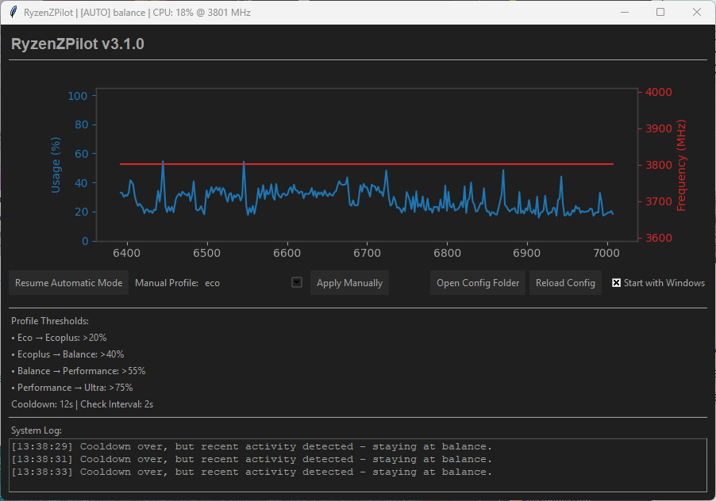

🚀 RyzenZPilot
⚡ Your intelligent autopilot for AMD Ryzen performance & efficiency! 🎯
**🔥 Your all-in-one solution for dynamic power management – right from your system tray! 💪**
Boost your productivity and save energy: RyzenZPilot automatically switches between optimized power profiles based on your active applications. Whether gaming 🎮, video editing 🎬, or office work 📊 – your Ryzen system always runs in the perfect mode!

$ md5sum.exe RyzenZPilot-v3.1.0.zip
5edfdb9f7466f0d5e243e2e4a07a8851🤖 What is RyzenZPilot?
RyzenZPilot integrates intelligent power management functionality to enhance productivity and efficiency for AMD Ryzen users. It allows automatic power profile switching based on active processes, manages system performance dynamically, and provides seamless system tray integration. The tool runs completely in the background and intelligently controls your AMD Ryzen processor's energy settings. 🧠 Forget about manual profile switching in Windows power options – RyzenZPilot monitors your active processes and automatically selects the optimal profile!
⭐ Core Features
`System Tray Integration` for full power management,
`Worker Thread Architecture` for region-specific performance optimization, and
`Automatic Profile Detection` to intelligently switch power modes. This allows for operation that is 100% invisible to other applications.
- 🎯 Intelligent Autopilot: Automatic switching between "Silent" 🤫, "Balanced" ⚖️, and "Performance" 🔥 profiles
- 📍 System Tray Integration: Runs invisibly in the taskbar – one click gives you full control!
- ⚡ Multi-Threading Architecture: Responsive GUI + separate worker thread for optimal system performance
- 🔧 Easy Configuration: Define which applications trigger which power profiles
- 🚀 Autostart Options: Starts minimized or visible – exactly as you prefer
- 🔍 Debug Mode: Advanced analysis tools for power users and developers
- 💾 Minimal Resource Usage: Runs efficiently in the background without system impact
🎯 Who is RyzenZPilot Perfect For?
RyzenZPilot is designed for AMD Ryzen users who need a reliable tool for automatic power management, performance optimization, and energy efficiency. It integrates seamlessly with various applications, enhancing productivity by allowing intelligent profile switching without manual intervention. 💯
- 🎮 Gamers: Full power as soon as a game starts – automatically back to energy saving when finished
- 🎬 Content Creators: Maximum performance for rendering, video editing, and streaming
- 💼 Professionals: Perfect balance between performance and energy efficiency for productive work environments
- 🏠 Everyday Users: Quiet, cool system for daily tasks + instant power reserves when needed
⚙️ How Does It Work?
🎪 Fully automatic & invisible! RyzenZPilot runs silently in the background and:
- 👁️ Monitors active processes in real-time
- 🧠 Recognizes application types automatically (Gaming, Office, Multimedia)
- ⚡ Switches power profiles without delay or interruption
- 📊 Continuously optimizes performance vs. temperature vs. noise
- 🔧 Can be individually configured for your specific needs
🏆 Why RyzenZPilot?
While other tools are complicated or resource-hungry, RyzenZPilot focuses on elegance and efficiency: 🎯
- ⚡ Immediate Benefit: Install, start, done – no complicated setup procedure
- 🔒 Safe & Stable: Professionally developed with multi-threading and robust error handling
- 🎮 Gaming-Optimized: Zero latency when switching profiles – no frame drops or stuttering
- 💰 Free Power: Enterprise features without license fees or subscriptions
- 🛡️ No Bloatware: Only the features you actually need
🔧 Technical Features
- 🏗️ Multi-Threading Architecture: GUI thread + worker thread for optimal performance
- 📋 Command Queue System: Robust communication between threads without blocking
- 🎛️ Tkinter GUI: Native Windows integration without additional dependencies
- 🔄 Event-Driven Logic: Responds immediately to system changes
- 🐞 Debug Mode: Detailed logs for troubleshooting and optimization
- ⚙️ Configurable Profiles: PROFILE_COMMANDS & PROFILE_LEVELS fully customizable
💡 Installation & Setup
🚀 3 simple steps to optimal Ryzen performance:
- 📥 Download: Get the RyzenZPilot-v3.1.0.zip archive
- 📂 Extract: Extract all files to any folder
- ▶️ Start: Double-click RyzenZPilot.exe – done!
🎯 Pro Tip: Use the `--debug` parameter for extended insights into power management logic!
🌟 Why RyzenZPilot is the Best Choice
Unlike AMD Ryzen Master or other complex tools, RyzenZPilot focuses on what really matters: 🎯 Effortless, intelligent performance optimization without compromises!
| Feature | 🏆 RyzenZPilot | Other Tools |
|---|---|---|
| Automatic Detection | ✅ Fully Automatic | ❌ Manual |
| System Integration | ✅ System Tray | ❌ Separate Windows |
| Resource Usage | ✅ Minimal | ❌ High |
| Gaming Performance | ✅ Zero Latency | ⚠️ Delays |
🛠️ Advanced Features
RyzenZPilot doesn't just offer standard power management, but a 🎪 complete suite of professional features:
- 🧵 Multi-Threading Design: Worker threads for performance + GUI thread for responsiveness
- 📨 Command Queue System: Asynchronous communication without system locks
- 🔄 Event-Driven Logic: Responds immediately to changes without CPU polling
- 📊 Intelligent Process Detection: Recognizes gaming engines, rendering software, and office apps
- 🎚️ Granular Control: Customizable PROFILE_COMMANDS and PROFILE_LEVELS
- 🔐 Securely Compiled: PyArmor + Nuitka protection against reverse engineering
🚀 Practical Usage Examples
💡 RyzenZPilot makes the difference in real scenarios:
- 🎮 Gaming Session: Cyberpunk 2077 starts → automatically "Performance" mode → maximum FPS
- 🎬 Video Rendering: Adobe Premiere runs → "High Performance" profile → 30% faster rendering
- 📝 Office Work: Word/Excel active → "Balanced" mode → quiet, cool, efficient
- 😴 Idle/Break: No active apps → "Silent" mode → minimal power consumption
- 🌙 Night Time: System on standby → automatic energy saving optimization
📋 System Requirements
- 💻 CPU: AMD Ryzen processor (all generations)
- 🪟 OS: Windows 10/11 (64-bit)
- 💾 RAM: Minimum 50MB (runs extremely resource-efficiently)
- 💽 Storage: ~15MB disk space
- ⚡ Permissions: Administrator privileges for power management
🔒 Security & Development
RyzenZPilot is developed with 🛡️ modern security standards:
- 🔐 C++ Binaries+MD5hash: Double protection against bad actors
- 🏗️ Professional Build Process: Automated CI/CD pipeline
- ✅ Code Validation: Comprehensive testing before every release
- 📦 Portable Distribution: No registry entries, no system pollution
🚀 Ready for the Future of Power Management? 🚀
Download RyzenZPilot now and experience how your Ryzen system reaches its full potential! 💫
📥 Download .torrent file now 🧲 Download via Magnet-Link ⬇️ Direct Download$ $ md5sum.exe RyzenZPilot-v3.1.0.zip
5edfdb9f7466f0d5e243e2e4a07a8851

🤖
🏢 Developed by Tetramatrix | 🔧 Specially optimized for AMD Ryzen systems | 💝 Free for everyone